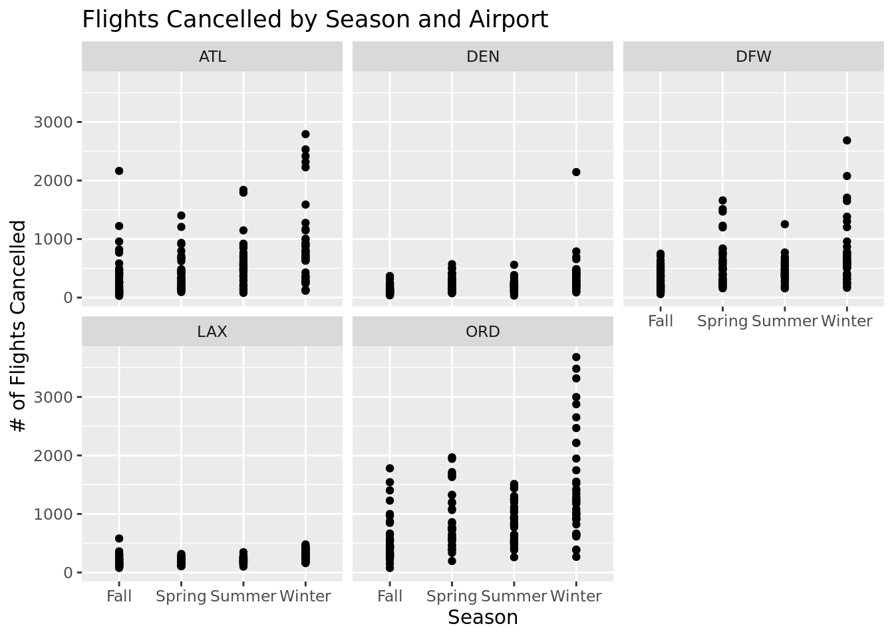
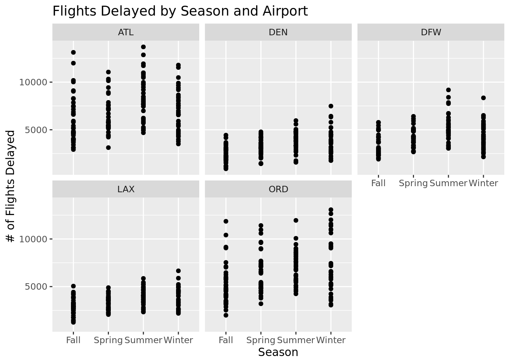

The Statistics of Airlines
Cancellations and Delays
Introduction and data
CORGIS Datasets Project (vt.edu)
Throughout this project, we have utilized the airplaines data set from the CORGIS Data Set Project. Created by Austin Cory Bart on March 27, 2015, this data set is the second version. There is little information on how the data was collected; however, it is likely that the statistician took a retrospective approach, examining monthly records for different airports across the United States starting in 2003. Each observation is based on an airport code (shorthand for the airport’s full name) and a specific time (year/month). For each observation, there are different variables to identify how many flights were delayed (and for what reason), cancelled, diverted, or on time.
Based on this data set our research question is: Of the top five busiest airports in the U.S., when and where are there the most flight delays and/or cancellations? This research question was particularly intriguing to us because flight delays and cancellations often give passengers grief and stress. Our question explores whether there is a specific time of year when flights are particularly prone to delays and cancellations. In turn, this would help those looking to fly to know how to best plan for trips that might be impacted by flight changes. In our research, we are utilizing both quantitative and categorical variables. Quantitative variables include the number of flights delayed and cancelled at different airports across the country. Categorical variables include month data and airport codes.
Based on our existing literature, we hypothesize that the time most prone to flight cancellations and delays is during the summer months (June through August), as so many people choose to fly during this time.
To answer this research question, certain data cleaning methods will be required. Currently, no “season” variable exists. Therefore, based on the month, create a new data set called airlines_season containing the season variable (based on the month variable in the initial data set). Since we are limiting our examination to the five busiest airports, we will also filter the data to only include ATL, LAX, ORD, DFW, and DEN. With this cleaned data set, we are able to conduct a statistical analysis to help us answer our research question.
Literature Review
Published on July 1st, 2022, the New York Times article “Understanding the Summer Air Travel Mess” discusses the challenges faced by travelers during the summer months due to mass delays and cancellations. As airports are busier during this time of years, factors such as weather, staffing shortages, and equipment issues have a far more significant impact on flight scheduling. Just last year, low-cost carriers like JetBlue and Spirit canceled 10.3 and 9 percent of flights in April. The article also provides advice on how to minimize the impact of flight delays: book direct flights and choose early morning departures. It’s also smart to avoid flying during weekends. Most importantly, though, “never book the last flight of the day.” Additionally, Murphy discusses the negative impact of these cancellations on airline finances and reputation. Our question further adds to this initial research by comparing the NYT’s prediction of increased delays and cancellations during the summer to statistical analysis of a data set. We are also specifically looking at the five busiest airports to do so.
Murphy, Heather. “Understanding the Summer Air Travel Mess.” The New York Times, The New York Times, 1 July 2022, https://www.nytimes.com/2022/07/01/travel/summer-travel-flight-delays-cancellations.html.
Methodology
To begin our exploratory data analysis, we created scatterplots using the facet_wrap() function to separate the data for each of the airports. The visualization below displays the number of flights cancelled at each of the top five busiest airports in the United States by season.

Examining this visualization, we noticed that almost all of the airports had the highest number of cancellations during the winter months. Of the five, ORD (O’Hare) had the most cancellations during the winter months. LAX (Los Angeles) was the only airport where the highest number of cancellations was not during the winter months.
The visualization below displays the number of flights delayed at each of the top five busiest airports in the United States by season.

Here, we observed that highest number of delays across the five airports occur either during the summer and winter months. ATL (Atlanta) had the highest number of delays of the five airports during the summer months while ORD (O’Hare) had the hightest number of delays during the winter months.
We also wanted utilized the summarize() function to calculate means.
# A tibble: 1 × 2
atl_mean_cancel atl_mean_delay
<dbl> <dbl>
1 567. 6924.# A tibble: 1 × 2
den_mean_cancel den_mean_delay
<dbl> <dbl>
1 236. 3331.# A tibble: 1 × 2
dfw_mean_cancel dfw_mean_delay
<dbl> <dbl>
1 532. 4326.# A tibble: 1 × 2
lax_mean_cancel lax_mean_delay
<dbl> <dbl>
1 225. 3522.# A tibble: 1 × 2
ord_mean_cancel ord_mean_delay
<dbl> <dbl>
1 950. 6480.According to this mean data, on average, O’Hare has the highest number of flight cancellations while Atlanta has the highest number of flight delays.
# A tibble: 1 × 2
winter_mean_cancel winter_mean_delay
<dbl> <dbl>
1 762. 5240.# A tibble: 1 × 2
spring_mean_cancel spring_mean_delay
<dbl> <dbl>
1 467. 4756.# A tibble: 1 × 2
summer_mean_cancel summer_mean_delay
<dbl> <dbl>
1 466. 5677.# A tibble: 1 × 2
fall_mean_cancel fall_mean_delay
<dbl> <dbl>
1 316. 3989.According to this mean data, on average, the highest number of flight cancellations occur during the winter months while the highest number of flight delays occur during the summer months.
To continue to explore our research question, we utilized linear regression modeling. A linear regression model is most appropriate as we are utilizing a categorical variable (seasons) to help answer our research question. To determine the relationship between the number of cancellations and seasons and to determine the relationship between the number of delays and seasons, we will use a simple linear regression model. We will also utilize an interactive multiple linear regression model to estimate the relationship between a quantitative variable (either the number of delays or the number of cancellations) and two explanatory variables (both seasons and airport codes). In this case, multiple linear regression is helpful because multiple variables are connected to the output (in this case, the number of flight delays or cancellations). Specifically, we will use an interactive linear regression model as the inclusion of the airport code variable impacts the relationship between the number of cancellations/delays and the season. Finally, we will utilize r-squared and AIC to determine whether the interactive models or the simple models are better fits for the data.
Results
First, we created a simple linear regression model to determine the relationship between the number of flights delayed and the season.
# A tibble: 4 × 5
term estimate std.error statistic p.value
<chr> <dbl> <dbl> <dbl> <dbl>
1 (Intercept) 3989. 160. 24.9 1.79e-100
2 seasonSpring 768. 231. 3.32 9.38e- 4
3 seasonSummer 1688. 226. 7.45 2.47e- 13
4 seasonWinter 1251. 228. 5.49 5.49e- 8In this case, we observe that the mean number of delays that occur in the fall is approximately 3988.68 (intercept). The coefficient associated with the summer season is both positive and most significant, indicating that the highest number of flight delays occur in the summer months across the five selected airports.
We then created a simple linear regression model to determine the relationship between the number of flights cancelled and the season.
# A tibble: 4 × 5
term estimate std.error statistic p.value
<chr> <dbl> <dbl> <dbl> <dbl>
1 (Intercept) 316. 33.9 9.34 1.09e-19
2 seasonSpring 151. 48.9 3.08 2.12e- 3
3 seasonSummer 150. 47.9 3.13 1.82e- 3
4 seasonWinter 445. 48.2 9.23 2.71e-19Here, we observe that the mean number of cancellations that occur in the fall is approximately 316.45 (intercept). The coefficient associated with the winter season is most significant, indicating that the highest number of flight cancellations occur in the winter months across the five selected airports.
We then created an interactive multiple linear regression model to illustrate the relationship between the number of flight delays, the season, and the airport code.
# A tibble: 20 × 5
term estimate std.error statistic p.value
<chr> <dbl> <dbl> <dbl> <dbl>
1 (Intercept) 6022. 264. 22.8 9.37e-88
2 seasonSpring 441. 381. 1.16 2.47e- 1
3 seasonSummer 2337. 373. 6.26 6.36e-10
4 seasonWinter 792. 375. 2.11 3.53e- 2
5 Airport.CodeDEN -3593. 373. -9.63 9.08e-21
6 Airport.CodeDFW -2597. 373. -6.96 7.40e-12
7 Airport.CodeLAX -3100. 373. -8.31 4.50e-16
8 Airport.CodeORD -876. 373. -2.35 1.91e- 2
9 seasonSpring:Airport.CodeDEN 302. 538. 0.561 5.75e- 1
10 seasonSummer:Airport.CodeDEN -884. 528. -1.68 9.41e- 2
11 seasonWinter:Airport.CodeDEN 620. 531. 1.17 2.43e- 1
12 seasonSpring:Airport.CodeDFW 422. 538. 0.784 4.33e- 1
13 seasonSummer:Airport.CodeDFW -653. 528. -1.24 2.16e- 1
14 seasonWinter:Airport.CodeDFW 268. 531. 0.505 6.14e- 1
15 seasonSpring:Airport.CodeLAX -26.5 538. -0.0492 9.61e- 1
16 seasonSummer:Airport.CodeLAX -1261. 528. -2.39 1.70e- 2
17 seasonWinter:Airport.CodeLAX 112. 531. 0.212 8.32e- 1
18 seasonSpring:Airport.CodeORD 936. 538. 1.74 8.24e- 2
19 seasonSummer:Airport.CodeORD -444. 528. -0.841 4.01e- 1
20 seasonWinter:Airport.CodeORD 1298. 531. 2.44 1.47e- 2At the Atlanta airport in the fall, we expect there to be about 6021 delayed flights (intercept). From this data, we do notice that the season with the highest number of flight delays varies between airport. For Atlanta, we observe that the coefficient associated with the summer season is the highest, indicating that summer has the highest number of delays in Atlanta. However, it is important to note that not all five of the airports have the highest number of delays in the summer.
Our second interactive multiple linear regression model illustrates the relationship between the number of flight cancellations, the season, and the airport code.
# A tibble: 20 × 5
term estimate std.error statistic p.value
<chr> <dbl> <dbl> <dbl> <dbl>
1 (Intercept) 362. 60.9 5.94 4.40e- 9
2 seasonSpring 67.0 87.9 0.762 4.46e- 1
3 seasonSummer 213. 86.2 2.48 1.35e- 2
4 seasonWinter 538. 86.7 6.20 9.43e-10
5 Airport.CodeDEN -223. 86.2 -2.59 9.86e- 3
6 Airport.CodeDFW -36.9 86.2 -0.428 6.68e- 1
7 Airport.CodeLAX -164. 86.2 -1.91 5.71e- 2
8 Airport.CodeORD 197. 86.2 2.28 2.27e- 2
9 seasonSpring:Airport.CodeDEN 28.4 124. 0.229 8.19e- 1
10 seasonSummer:Airport.CodeDEN -157. 122. -1.29 1.99e- 1
11 seasonWinter:Airport.CodeDEN -297. 123. -2.42 1.58e- 2
12 seasonSpring:Airport.CodeDFW 201. 124. 1.62 1.06e- 1
13 seasonSummer:Airport.CodeDFW -72.7 122. -0.597 5.51e- 1
14 seasonWinter:Airport.CodeDFW -110. 123. -0.897 3.70e- 1
15 seasonSpring:Airport.CodeLAX -73.6 124. -0.592 5.54e- 1
16 seasonSummer:Airport.CodeLAX -206. 122. -1.69 9.17e- 2
17 seasonWinter:Airport.CodeLAX -431. 123. -3.51 4.68e- 4
18 seasonSpring:Airport.CodeORD 263. 124. 2.11 3.48e- 2
19 seasonSummer:Airport.CodeORD 118. 122. 0.968 3.33e- 1
20 seasonWinter:Airport.CodeORD 376. 123. 3.06 2.28e- 3At the Atlanta airport in the fall, we expect there to be about 362 delayed flights (intercept). From this data, we do notice that the season with the highest number of flight cancellations varies between airport. For Atlanta, we observe that the coefficient associated with the winter season is the highest, indicating that winter has the highest number of cancellations in Atlanta. However, it is important to note that not all five of the airports have the highest number of cancellations in the winter.
To compare the fit of the simple linear regression models with the fit of the interactive multiple linear regression models, we calculated an r-squared and an AIC value for each of the models.
R-squared values for the delay simple and multiple linear regression models (respectively):
[1] 0.07468645[1] 0.508484R-squared values for the cancellation simple and multiple linear regression models (respectively):
[1] 0.1055727[1] 0.4341787AIC values for the delay simple and multiple linear regression models (respectively):
[1] 13885.64[1] 13436.83AIC values for the cancellation simple and multiple linear regression models (respectively):
[1] 11525.64[1] 11209.63Comparing the linear regression model without airport codes (model1) for flight delays with the interactive regression model that takes airport codes as a second variable (model2) for flight delays, we observed that the interactive model is a better representation of the data than the simple model. The r-squared for the interactive model is closer to one than the simple model, and the AIC for the interactive model is smaller than the AIC for the simple model, both indicating that the second model, the interactive model, better represents this data.
We found the same results comparing the two models (the simple model and the interactive model) for the flight cancellation data. The r-squared for the interactive cancellation model is closer to one than the simple cancellation model, and the AIC for the interactive cancellation model is lower than the AIC for the simple cancellation model.
Discussion
Based on our statistical analysis, we were able to find that the season with the highest number of delays among the top five busiest airports was summer. The season with the highest number of cancellations among the top five busiest airports was winter. As we also created a interactive multiple linear regression model to explore whether the airport interacted with the season to impact the level of flight delays, we were able to conclude that the season was not the sole variable impacting whether flights were cancelled or delayed. It is important to note that there are a few limitations with our research. Primarily, we only examined the five most busy airports which is a small portion of the airlines data set, ultimately decreasing the reliability of our conclusions. We also only thoroughly examined the impact of seasons on delays and cancellations. There are other variables that may be more useful in impacting the number of delays or cancellations (ex. airport codes, airlines, etc.). Further research should more deeply examine how airports impact flight delays or cancellations and should explore what most commonly causes such flight delays and cancellations.